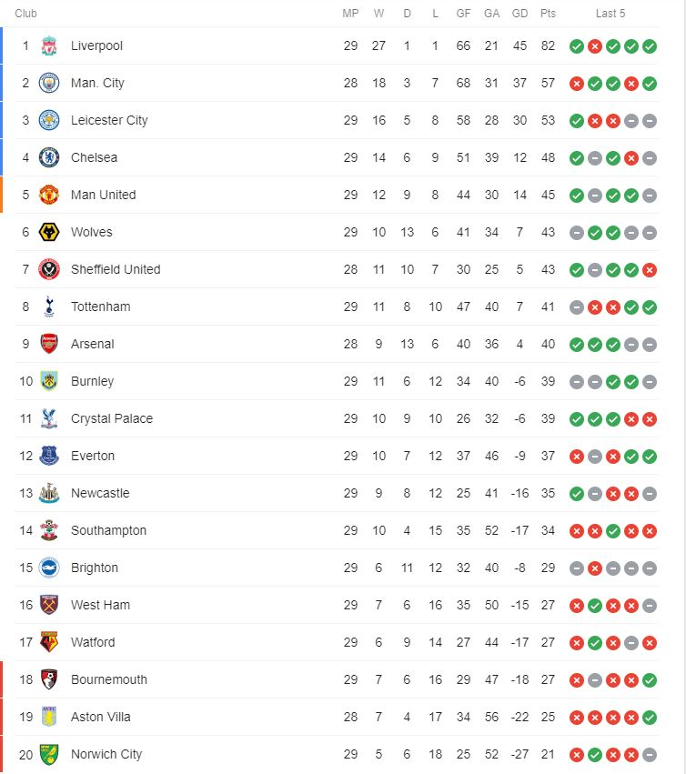

This is the current premier league table at the time of the 31st of March 2020 following the league's temporary postponement due to the COVID-19 outbreak. It is unknown when the premier league will return and if the season will be voided or if it will be continued on to ensure that it is finished.

Up to this point in the season Liverpool have been dominant in comparison to the other teams in the league while league heavyweights Manchester City, Manchester United and Chelsea have had a very poor season in comparison to recent seasons. It is worth noting that Leicester and Sheffield United have wildly overperformed this season with Leicester sneaking to third place and Newly promoted Sheffield in a fight for a top 4 place which would guarantee a place in the champions league.